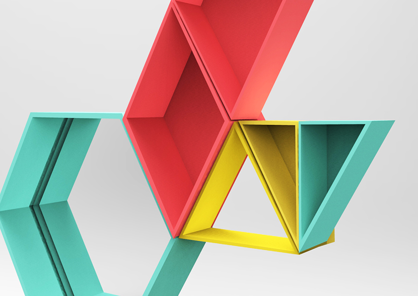

Computer Controlled Cutting

Progettazione e realizzazione INSIDE
La progettazione e la realizzazione dello specchio inside, prevede diversi passaggi:
-La realizzazione del disegno tramite il software Rhinocers
-La modellazione e scomposizione in parti
-Il Nasting e il settaggio per la preparazione al laser cut
-Assemblamento delle parti e verniciatura
Preparare il file per il taglio laser è stato un lavoro abbastanza lungo perchè ho dovuto valutare la migliore tecnica di assemblaggio che desse il risultato da me desiderato. Essendo una tecnologia che lavora su superfici bidimensionali ho dovuto riflettere se lavorare con degli incastri o con dei livelli da sommare sucessivamente. Per una rifinitura ottimale ho deciso di lavorare per livelli; Ciò mi ha permesso di capire l'importanza del nasting, quando si hanno così tante parti da tagliare. Un buon nasting ti permette non solo di risparmiare sui materiali ma anche sul percorso del laser e quindi sul tempo di taglio.
Altro fondamentale passaggio è il settaggio della macchina e del software RDworks. E'importantissimo impaginare bene il disegno, evitare doppie linee, dare un buon margine di spazio, e impostare la velocità e il fuoco del laser in base allo spessore del pannello. Il software fornisce una simulazione di taglio nella quale si può controllare sia il percorso del laser che il tempo che impiegherà.


Taglio laser delle 6 tavole 500x700x10


Assemblaggio dei 9 livelli con la colla
Home